VISUAL EVIDENCE IN SHOOT DECISIONS
Seeing Threat Unfold: Dynamic Visual Information Shapes Police Decisions to Shoot
temporal dynamic informations that influence police evidence accumulation process
Sophie Su · 10/07/2026
SCRIPT: Hi everyone, I'm Sophie Su. Today I'm going to talk about what officers actually see in the moments before they decide whether to shoot. The title is "Seeing Threat Unfold: Dynamic Visual Information Shapes Police Decisions to Shoot." The idea is simple: a shoot decision unfolds over time, and the visual information in the scene unfolds with it. I want to ask which of that information drives the officer's evidence accumulation, and whether it helps explain the race effect we see in police shooting decisions.
VISUAL EVIDENCE IN SHOOT DECISIONS
Police shootings are a pressing issue in the United States
1,365
people killed by US police in 2024, the most on record
Mapping Police Violence
2.9×
as likely for Black as for White people to be killed by police (2024)
Mapping Police Violence
≈1,000
people shot and killed by US police every year since 2015
Washington Post, Fatal Force
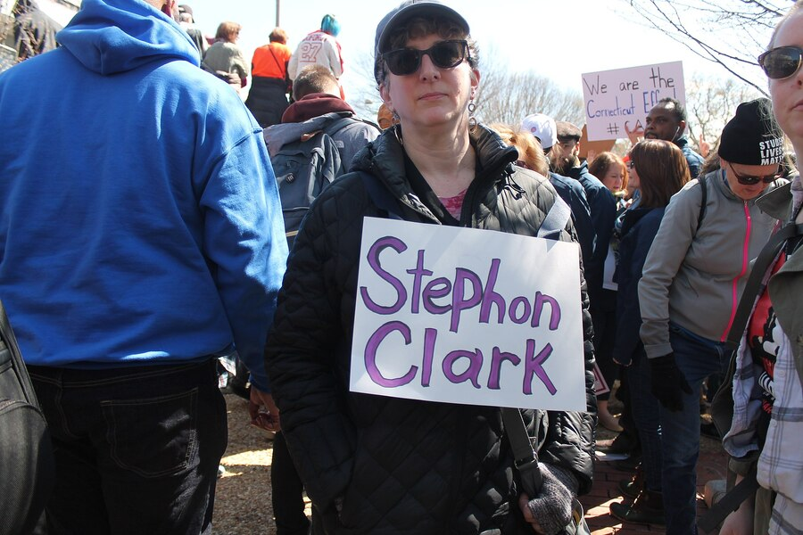
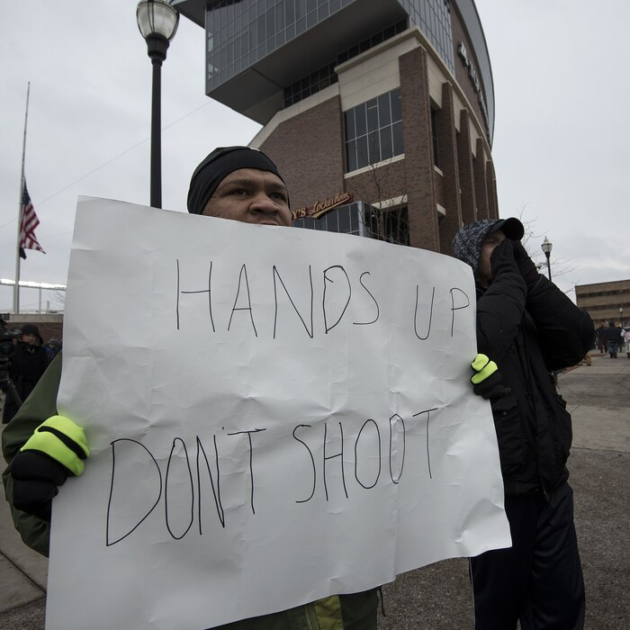
Photos: Elvert Barnes (CC BY-SA 2.0); Fibonacci Blue (CC BY 2.0), Wikimedia Commons
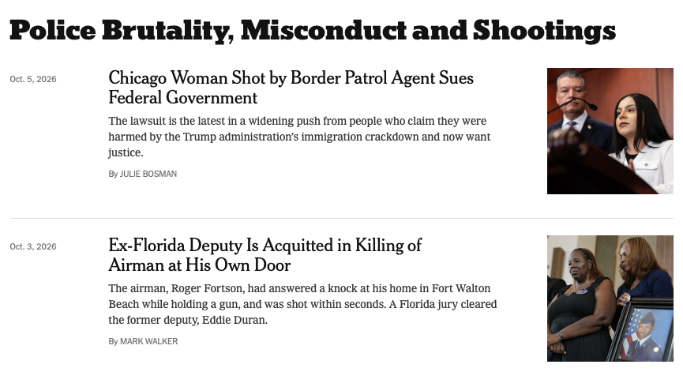
The New York Times , Police Brutality, Misconduct and Shootings (Oct. 2026)
SCRIPT: Let me start with why this matters. Police shootings are a pressing issue in the United States. In 2024, at least 1,365 people were killed by police in the US, the most since Mapping Police Violence started counting in 2013. And Black people were 2.9 times as likely as White people to be killed by police. The Washington Post's Fatal Force database counts about a thousand people shot and killed by police every single year since 2015. Behind these numbers are real people and communities, and these deaths have sparked protests across the country. And it is still in the news: this is The New York Times' ongoing coverage of police shootings. IF ASKED: There is no official national count, so totals differ by source. Mapping Police Violence is run by Campaign Zero; 2023 was 1,329. The news clipping is the New York Times topic page (screenshot Oct 8, 2026); ads and the sidebar were cropped out. Photos: Stephon Clark rally, Washington DC, March 2018; "Hands up, don't shoot," Minneapolis, 2014.
VISUAL EVIDENCE IN SHOOT DECISIONS
3
What drives the decision to shoot?
A pressing problem studied across criminology, economics, policy and psychology, yet still poorly understood . Prior work points to three factors:
1. Race
Race effects on speed and errors
Correll et al. 2002, 2007; Plant & Peruche 2005
2. Visual evidence
Gaze on the held object predicts accuracy
Vickers & Lewinski 2012; Nieuwenhuys et al. 2015
3. Threat
Scene and suspect behaviour shift shooting
Correll et al. 2011; Pleskac et al. 2025
The limit: the data leave out the dynamic visual information the officer actually sees.
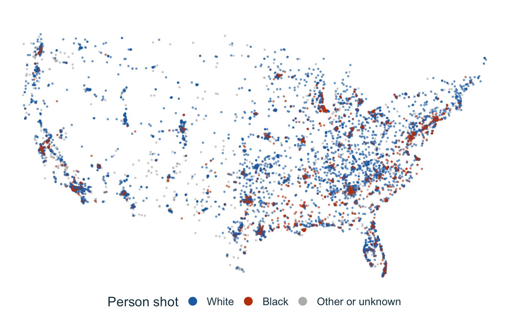
Aggregate records
Who was shot and where: 9,194 fatal shootings, 2015–2024. Nothing about what the officer saw.
Washington Post, Fatal Force
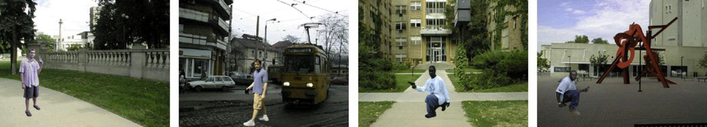
Static lab images
One still photo per trial: no movement, no unfolding draw, no timing to the object.
First-person shooter task, Correll et al. 2002 (image: Correll lab)
Research Question: what dynamic visual information drives the decision, and does it explain the race effect?
SCRIPT: So what drives the decision to shoot? This question has been studied in criminology, economics, policy and psychology, but it is still poorly understood. Prior work points to three factors. [Click 1] First, race. Lab shooter tasks find race effects on both speed and errors. [Click 2] Second, visual evidence. Where officers look, especially at the object in the suspect's hand, predicts how accurate they are. [Click 3] Third, threat. The scene and the suspect's behaviour shift shooting decisions. [Click 4] But there is a limit. The data used so far leave out the dynamic visual information the officer actually sees. [Click 5] On one side we have aggregate records, like this map of every fatal police shooting from 2015 to 2024. They tell us who was shot and where, but nothing about what the officer saw. [Click 6] On the other side we have lab tasks that use a single still photo per trial. There is no movement, no unfolding draw, and no timing. [Click 7] So my research question is: what dynamic visual information drives the decision, and does it explain the race effect? IF ASKED: Race: Correll et al. 2002, 2007; Plant and Peruche 2005. Visual evidence: Vickers and Lewinski 2012; Nieuwenhuys et al. 2015. Threat: Correll et al. 2011; Pleskac et al. 2025. The map shows 9,194 fatal shootings from the Washington Post Fatal Force data (CC BY-NC-SA).
VISUAL EVIDENCE IN SHOOT DECISIONS
Current Dataset
Factor Levels Scenario (8) Alley, Domestic phone call, Grocery, Parking lot, Pullover (day), Pullover (night), Sidewalk, Warehouse Suspect race Black actor, White actor Object Gun, harmless object Behaviour Nonantagonistic, antagonistic
Right, top: the immersive shooting simulator: the officer faces a life-size screen; the decision clock starts when the object is first visible (t0). Figure 1 of Pleskac et al. (2025).Right, bottom: example stimulus, Pullover (day), Black actor, nonantagonistic, harmless object. 59% of officers shot.
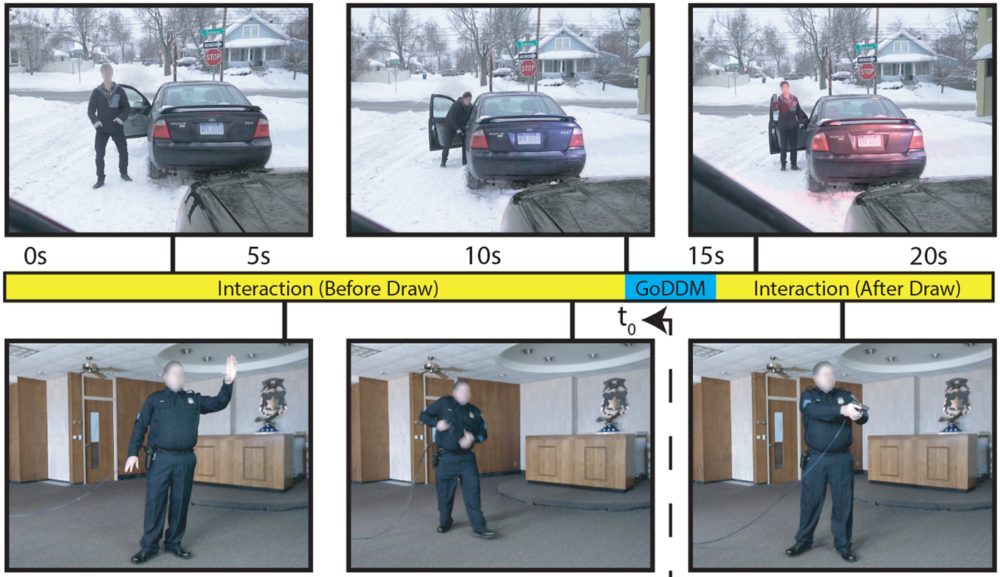
Stimulus video shown in the live talk
SCRIPT: Here is the data. It is the same data set as Pleskac et al. 2025. 659 police officers from the Milwaukee Police Department took part in an immersive shooting simulator. On the top right you can see the setup: the officer stands in front of a life-size screen with a realistic handgun, the scenario plays out, and they decide whether to shoot. The decision clock starts at t zero, the moment the object the suspect pulls out first becomes visible.
There are 64 videos across 8 scenarios, and after exclusions we analyse 19,316 trials. Each video crosses suspect race, Black or White actor; the object, a gun or a harmless object; and the suspect's behaviour, nonantagonistic or antagonistic.
On the bottom right is the example I'll come back to: a daytime pullover, Black actor, nonantagonistic, holding a harmless object. 59 percent of officers shot. [CLICK the still to play the stimulus clip.]
IF ASKED: Most officers saw 32 videos. Twenty actors across the 8 scenarios. Response time is measured from object onset.
VISUAL EVIDENCE IN SHOOT DECISIONS
The race gap in errors in non antagonist unarmed conditions
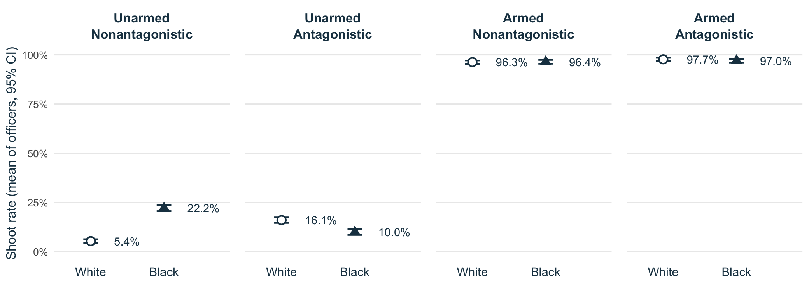
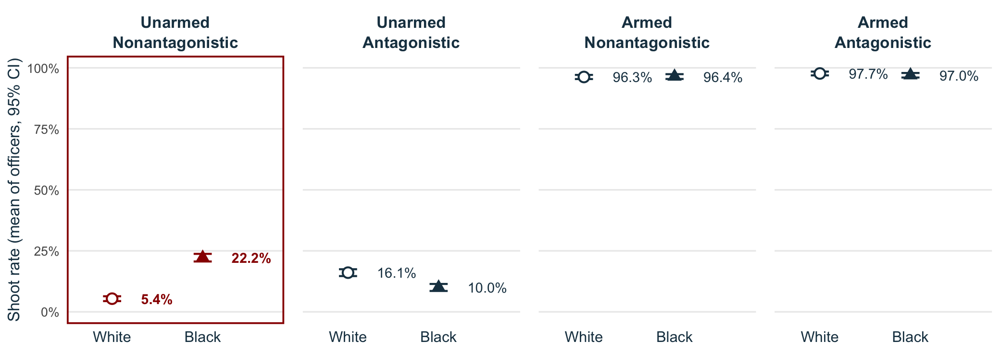
MODEL PREVIEW
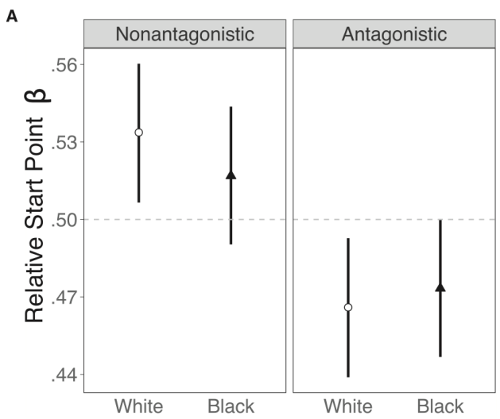
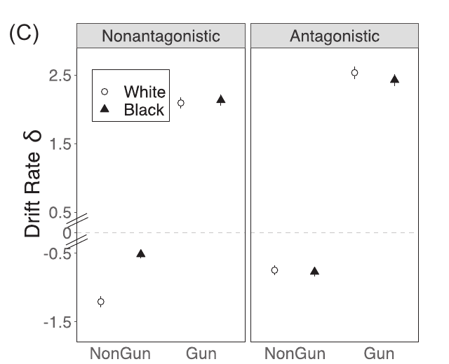
Start point (A): no race difference. Drift (C): weaker toward don't shoot for Black suspects, only when unarmed and nonantagonistic.
Pleskac et al. 2025, Fig. 5A and 5C
SCRIPT: Now the behaviour. These four panels show how often officers shot, by suspect race, in each condition.
[Click 1] The key panel is unarmed and nonantagonistic. Here, officers shot 22 percent of Black suspects but only 5 percent of White suspects. That is the race gap in errors. In the other panels it is not there: with antagonistic unarmed suspects the raw rates even reverse, and armed suspects are shot 96 to 98 percent of the time regardless of race.
[Click 2] Here is a quick preview of the published model. On the left is the GoDDM: after a non-decision time, evidence starts at a start point and drifts toward the shoot boundary or away from it; the threshold is the distance between the boundaries, and a shoot happens when evidence reaches the upper one. In panel A, the start point, White and Black overlap, so race does not change where the decision starts. In panel C, the drift rate, officers accumulated weaker evidence toward "don't shoot" for Black suspects, and only when the suspect was unarmed and nonantagonistic. So the race effect lives in the evidence accumulation. That is exactly where visual information should enter, and that is what I test today.
BACKGROUND: THE GoDDM (Pleskac, Cesario, Johnson & Gagnon, 2025; their Table 1 and Figure 1)
What it is: the diffusion decision model (DDM; Ratcliff) describes a decision as noisy evidence accumulating over time until it reaches one of two thresholds. The clock starts when the object is drawn (object onset). It is fitted to each officer's trials: whether they shot, and when.
Why "Go": officers make only one explicit response, shoot. Not shooting has no response time. Go/no-go work (Gomez et al., 2007; Ratcliff et al., 2018) shows people use the same accumulation process in go/no-go as in two-choice tasks; the no-go ("don't shoot") boundary is implicit. So a don't-shoot trial is treated as a hit on the lower boundary whose time is missing (censored); the model uses the probability of not shooting together with the shoot RTs.
The four parameters:
- Relative start point β (0 to 1): where evidence starts between the two thresholds, i.e. a bias before the object is seen. Above .5 = closer to shoot; below .5 = closer to don't shoot.
- Threshold separation α (above 0): the distance between the shoot threshold (at α) and the don't-shoot threshold (at 0); it is caution. Larger = more evidence needed, so slower but more accurate decisions (the speed-accuracy tradeoff).
- Drift rate δ (any value): the average strength of evidence per unit time. The sign is the direction (positive = toward shoot, negative = toward don't shoot); the size is the quality of the information.
- Relative non-decision time NDT′ (0 to 1): the share of the response time, relative to the minimum observed response time, spent on things other than deciding, such as seeing the object and pulling the trigger.
How it was fitted: hierarchical Bayesian estimation (pools officers, keeps each officer's own values); every parameter has an officer-level random intercept. Start point and threshold vary by race × behaviour; drift and NDT′ by race × object × behaviour. Model comparison put the scenario and suspect (actor) effects on the start point. "Credible" = 95% HDI excludes a region of practical equivalence (±0.05 for β and NDT′, ±0.1 for α and δ).
Published results (Figure 5):
- Start point (5A): no race effect (−0.005 [−0.037, 0.028]), so no pre-object bias to shoot Black suspects; officers start further from shoot with antagonistic suspects (−0.056).
- Threshold (5B): lower for nonantagonistic Black than White suspects (−0.21), higher for antagonistic Black suspects (+0.48).
- Drift (5C): race × object × behaviour interaction; for unarmed nonantagonistic suspects, evidence against shooting is stronger for White than Black suspects (−0.69 [−0.79, −0.59]); no credible race gap in the other three cells.
- NDT′ (5D): higher for unarmed nonantagonistic Black suspects (+0.07), lower for antagonistic Black suspects (−0.10).
The paper's reading: weaker drift plus a lower threshold for unarmed, nonantagonistic Black suspects explains their higher error rate; race acts as a cue to disambiguate threat when behaviour is ambiguous.
Our version (slide 9): the same model plus st0 (trial-to-trial variability in non-decision time) and the previous trial on the start point; the visual information model then adds gun score and wrist speed on drift.
IF ASKED: Shoot rate is each officer's own proportion in the cell, averaged over officers, with a 95 percent t interval across officers. Published drift difference: about −0.69 [−0.79, −0.59]. Start points: nonantagonistic about .53 vs .52, antagonistic .47 vs .47.
VISUAL EVIDENCE IN SHOOT DECISIONS
Machine learning on pre-onset video features
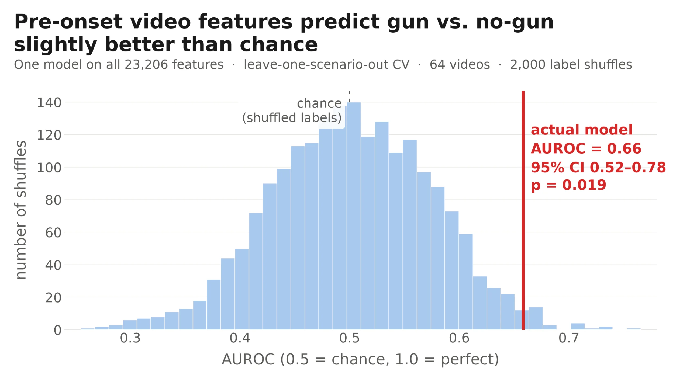
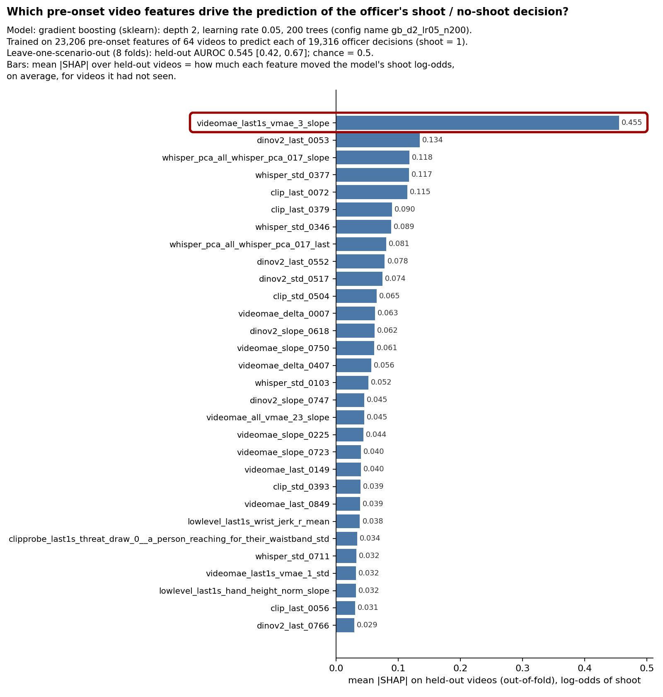
Methods
Features: 23,206 pre-onset summaries (mean, SD, slope, last value) of motion, image and audio embeddings, CLIP text probes, pose and object detections.Models: all features enter 22 tree models (single trees, random forests, extra trees, gradient boosting); no pre-selection.Test: leave-one-scenario-out, 8 folds; importance = mean |SHAP| on held-out videos.
What the top feature tracks: the right wrist moving toward the waist
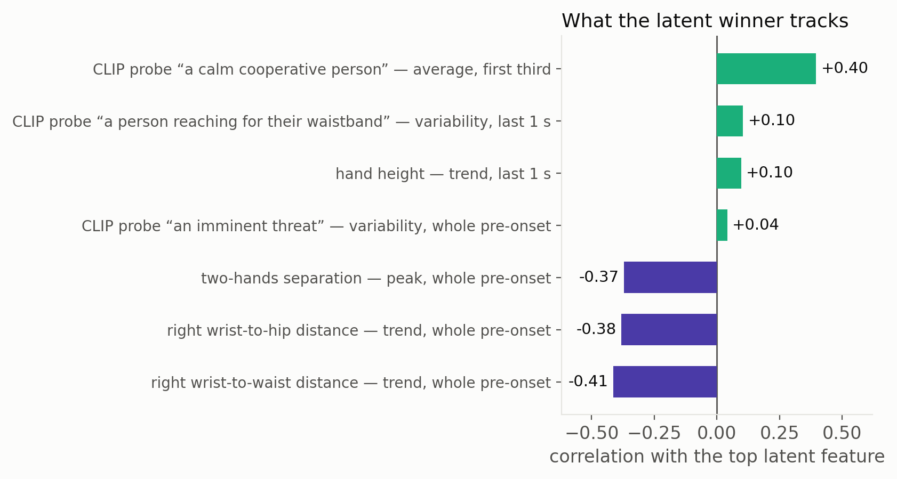
Strongest links: the right wrist moving toward the waist (r = −0.41) and a calm, cooperative, nonantagonistic look (r = +0.40), across 64 videos.
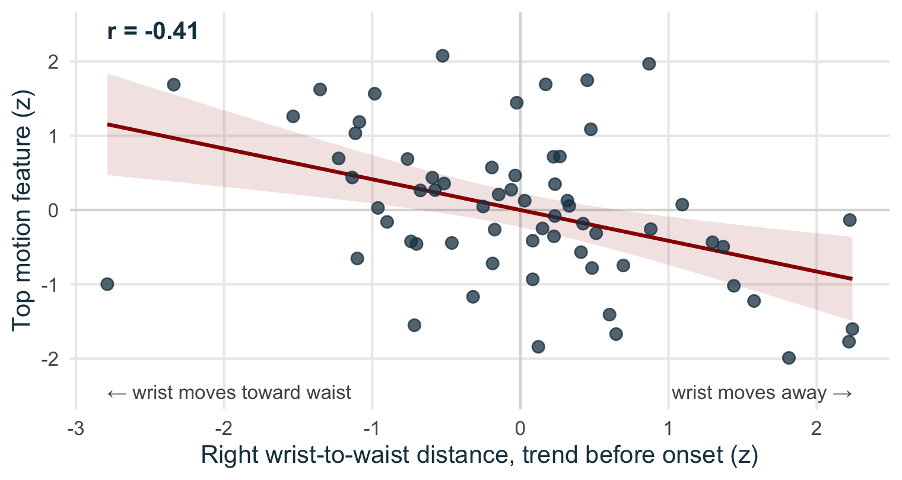
Each point is one video. The closer the right wrist moves to the waist, the higher the top feature (r = −0.41).
SCRIPT: Before building the decision model, we asked a broader question with machine learning: is there information in the video before the object appears that predicts the outcome?
[Click 1] We extracted 23,206 features from the lead-in of each video: motion, image and audio embeddings, text probes, pose and object detections. All of them went into 22 tree models with no pre-selection, and we tested on held-out scenarios, training on seven and testing on the eighth.
[Click 2] Can these features tell whether a gun is coming? Somewhat. The model reaches an AUROC of 0.66, better than shuffled labels, but this is weak evidence.
[Click 3] Can they predict the officer's decision? Here are the features the best model relied on. The top one is a motion feature from the last second before the object appears.
[Click 4] When we unpack that feature, it tracks the right wrist moving toward the waist, and a calm, cooperative look: a waistband reach in an otherwise calm suspect. On the right is the wrist relationship on its own. Each point is a video. Moving left, the right wrist closes in on the waist over the lead-in, and the top feature goes up. The correlation is minus 0.41 across all 64 videos.
So the takeaway is: before the object appears there is little reliable information. The decision is mostly driven by what happens after onset. That led us to the two measures in the next slides.
IF ASKED: Gun vs no-gun AUROC 0.66 (95% CI 0.52 to 0.78), p = .019 against 2,000 shuffles, but it was the best of 161 combinations and the null best-of-161 is about 0.65. Decision model AUROC 0.545 [0.42, 0.67]; all 22 configurations include chance. Top feature correlations across 64 videos: wrist-to-waist −0.41, calm cooperative +0.40; correlational only. Split by object, the wrist correlation is −0.67 in gun videos and −0.25 in no-gun videos.
VISUAL EVIDENCE IN SHOOT DECISIONS
Measure 1: right-wrist trend before the object appears (wrist speed)
Stimulus video shown in the live talk
Wrist slows toward onset (wrist speed z −1.27) → drift −0.26, toward don't shoot. Grocery, Black actor, unarmed, nonantagonistic: 0.3% shot.
Stimulus video shown in the live talk
Wrist speeds up toward onset (wrist speed z +1.19) → drift +0.24, toward shoot. Pullover (day), White actor, unarmed, nonantagonistic: 13% shot.
7 · ViTPose++ tracks the right shoulder and wrist at 30 Hz. wrist speed = slope of wrist speed relative to the shoulder over the whole lead-in. Clips play at 0.5× real time.
SCRIPT: The first measure is the right-wrist trend before the object appears; I'll call it wrist speed. We track the suspect's pose with ViTPose and measure how fast the right wrist moves relative to the shoulder. The red line is the trend over the lead-in, and its slope is the measure.
On the left, a grocery scenario: the wrist slows down toward the reveal. In the model that pushes drift toward "don't shoot," and almost no officer shot, 0.3 percent.
On the right, a daytime pullover: the wrist speeds up just before the reveal. That pushes drift toward "shoot," and 13 percent of officers shot.
Everything shown here happens before the object is visible.
IF ASKED: Wrist speed is z-scored across the 64 videos: −1.27 on the left, +1.19 on the right; drift effects −0.26 and +0.24. Pose at 30 Hz. Clips play at half speed.
VISUAL EVIDENCE IN SHOOT DECISIONS
Gun score = mean P("gun") over the frames +0.3 to +0.6 s after onset. Clips: Sidewalk, nonantagonistic, played at 0.1× real time.
Measure 2: gun score of the held object
Frame
every 0.1 s, −0.5 to +1.2 s from onset
Suspect crop
square, 1.5 × the box, 672 px
Qwen3-VL-32B
crop + one fixed question
First token
one forward pass
7 answers
p(gun) rescaled over the 7 words
Stimulus video shown in the live talk
Harmless object: gun score 0.00 · 2% of officers shot
Stimulus video shown in the live talk
Gun: gun score 0.25 · 99% of officers shot
SCRIPT: The second measure is how much the object in the suspect's hand looks like a gun. Every tenth of a second, we crop the suspect and give the crop to a vision-language model, Qwen, with one fixed question: what object is in this person's hand? It answers with one of seven words, like gun, phone, wallet or nothing. The model never sees the word race. We read the probability that its answer is "gun," and average it from 0.3 to 0.6 seconds after onset. That gives one gun score per video. On the left, a harmless object: the model says "nothing" on every frame, the gun score is zero, and only 2 percent of officers shot. On the right, a gun: the score is 0.25 and 99 percent shot. Across the 32 harmless-object videos, the gun score correlates 0.80 with how often officers shot. IF ASKED: Only 5 harmless-object videos score above 0.1, and 4 of those 5 have Black actors. Single-frame scores are noisy. Gun score is z-scored over the 64 videos. Clips are at 0.1 times real time.
VISUAL EVIDENCE IN SHOOT DECISIONS
Model setups
Both models build on the published GoDDM (Pleskac et al., 2025), adding trial-to-trial non-decision time (st0 ) and the previous trial on the start point.
Parameter Base model Visual information model Start point β race × behaviour + officer + actor + scenario + previous trial same as base Threshold α race × behaviour + officer same as base Drift δ race × object × behaviour + officer base + gun score + wrist speed Non-decision time race × object × behaviour + officer, plus st0 same as base
9 · Previous trial: +0.5 if the last video had a gun, −0.5 if not. Gun score and wrist speed: one value per video, z-scored, one slope per object × behaviour cell. Stan, 3 chains × 1,000 draws, 19,316 trials.
SCRIPT: Now the model. Both models build on the published drift-diffusion model from Pleskac et al. 2025. In a drift-diffusion model, evidence starts at a start point, accumulates at a rate called the drift, and the officer responds when it reaches a threshold; non-decision time covers things like perception and pulling the trigger. Our base model adds two things to the published one: trial-to-trial variability in non-decision time, and the previous trial on the start point.
[Click 1] The visual information model is identical except for one row: the drift. We add the gun score and the wrist speed to the drift. Each measure gets one slope per object and behaviour condition, shared by Black and White videos. So any change in the race gap has to come from the videos themselves, not from a separate race slope.
IF ASKED: Previous trial: after a gun video officers start closer to shoot (slope +0.19). The non-decision-time variability fixes the too-slow predicted false alarms. 8 slopes total. Fitted in Stan, 3 chains of 1,000 draws.
VISUAL EVIDENCE IN SHOOT DECISIONS
10 · ELPD = expected log predictive density (PSIS-LOO), higher is better; difference = visual information minus base.
Model fit: the visual measures predict the trials better
Measure Base model Visual information model Difference ELPD ± SE −3,484.8 ± 122.4 −2,742.7 ± 119.9 +742.1 ± 34.5
SCRIPT: First, does adding visual information actually help? Yes. We compare the models with leave-one-out cross-validation, where higher is better. The visual information model is better by 742 points, about 21 standard errors.
Because many trials share the same video, we also did a stricter check by video, and it still holds: 46 of the 64 videos are fit better.
IF ASKED: Video-level z = 4.9. Pareto k is fine for all but a handful of trials. One divergent transition in 3,000 draws; the only R-hat above 1.01 are the between-officer SDs, the same as in the base model.
VISUAL EVIDENCE IN SHOOT DECISIONS
Drift changes; start, threshold and NDT barely move
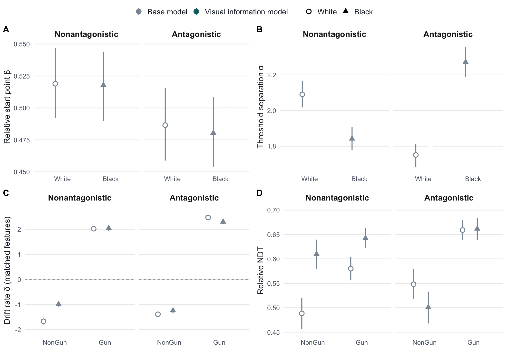
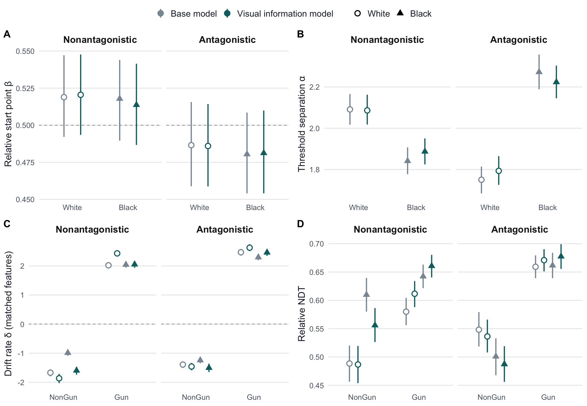
Base model
Visual information model
Unarmed nonantagonistic drift gap 0.27
Start point, threshold and non-decision time barely change.
11
SCRIPT: Here are the parameters. The grey points are the base model. Look at panel C, the drift rate: for unarmed, nonantagonistic suspects, the drift is less negative for Black suspects. That is the race gap. [Click 1] Now I add the visual information model in teal. Here we compare both races at the same gun score and wrist speed. [Click 2] The box marks that condition: unarmed, nonantagonistic suspects. [Click 3] With the visual information model, at matched gun score and wrist speed, the race gap in drift drops from 0.68 to 0.27. Meanwhile the start point, threshold and non-decision time barely change. So visual information works through the drift, which is exactly where the race effect was. IF ASKED: 95% intervals: 0.68 [0.55, 0.82] and 0.27 [0.11, 0.43]. Dots are posterior means for a typical officer, actor and scenario; bars are 95% intervals.
VISUAL EVIDENCE IN SHOOT DECISIONS
How gun score and wrist speed move drift
Both push drift toward shoot most where the race gap is: unarmed, nonantagonistic suspects (crimson).
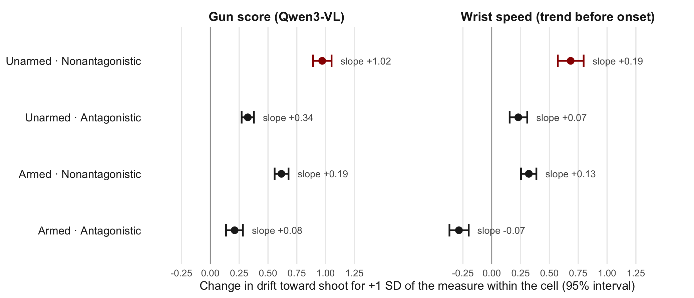
13 · Visual information model. Dot: drift change for +1 SD among the cell's 16 videos; bar: 95% interval; label: probit-scale slope per 1 SD across all 64 videos.
SCRIPT: How do the two measures move drift? Each dot shows how much drift changes toward shoot for a one standard deviation increase within a condition.
Both measures push toward shoot most in the condition where the race gap is: unarmed, nonantagonistic suspects, in crimson. One standard deviation more gun-like adds about 1.0 to the drift toward shoot. A faster wrist trend adds about 0.7.
IF ASKED: All intervals exclude zero. The probit slope alone misleads, because armed videos vary much more in gun-likeness. In armed antagonistic videos the wrist effect flips sign (−0.29), which is hard to explain; treat the wrist effects as exploratory.
VISUAL EVIDENCE IN SHOOT DECISIONS
Posterior predictions: both models reproduce the shoot rates
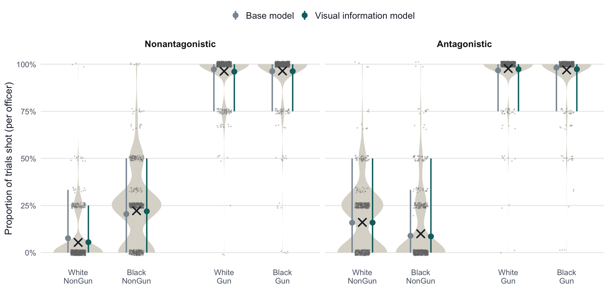
SCRIPT: Next, can the models reproduce the data? Here the crosses are the observed shoot rates and the circles are the model predictions. Both models capture the shoot rate in every condition. The one visible difference: for White unarmed nonantagonistic suspects, the base model over-predicts false alarms, 7.6 percent against 5.4 observed, while the visual information model gets it right at 5.5 percent. IF ASKED: 300 posterior draws; each observed trial re-simulated so each officer keeps their own trial count. Bars are wide because each officer saw about four videos per condition.
VISUAL EVIDENCE IN SHOOT DECISIONS
Posterior predictions: shoot-RT quantiles
Armed suspects (hits)
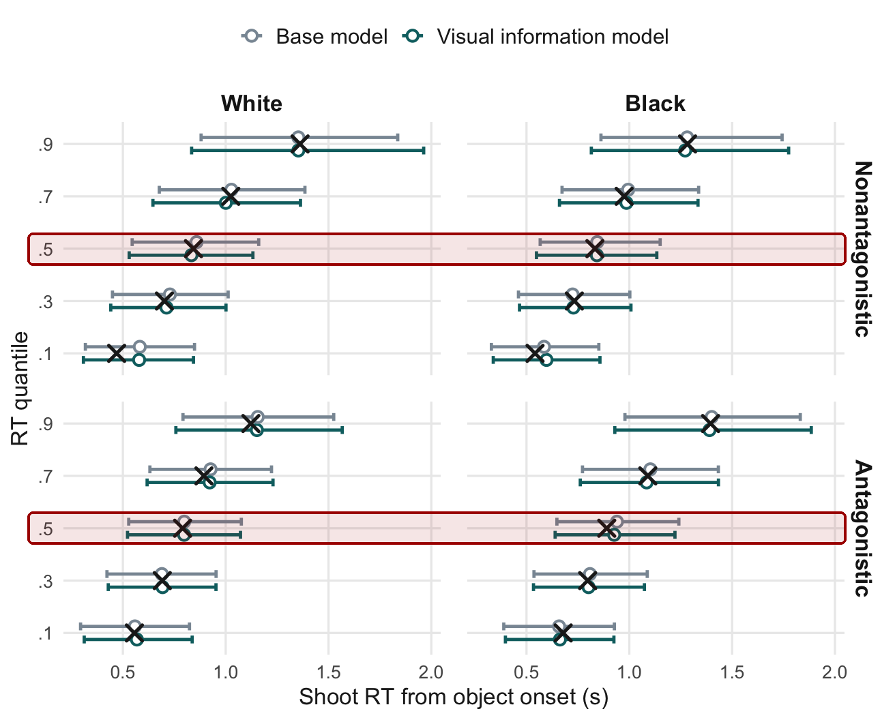
Hit RTs reproduced: both models sit on the observed quantiles.
Unarmed suspects (false alarms)
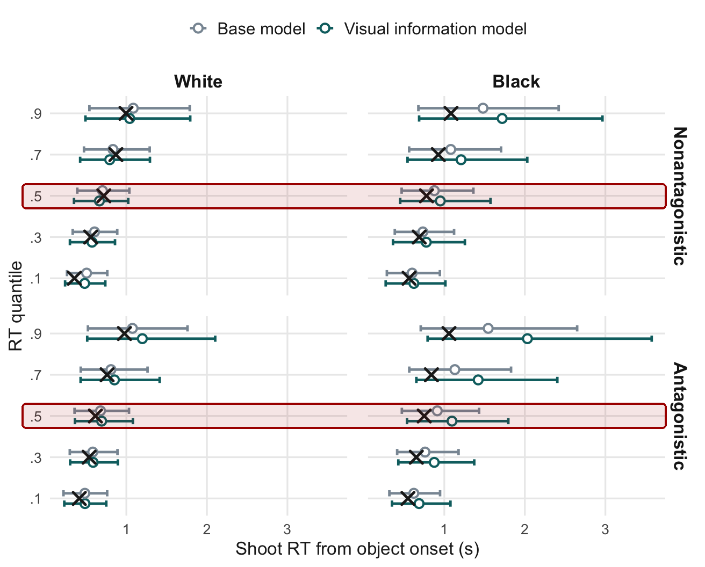
False alarms: medians fit; the slow tail is predicted too slow, as in the published paper.
SCRIPT: And the response times. Each row is a quantile of shoot response time, from the fastest 10 percent to the slowest 90 percent. The crosses are observed, the circles predicted. First, armed suspects, the hits. Both models sit right on the observed quantiles, so the model reproduces the response-time distribution for correct shoots. [Click 1] Now unarmed suspects, the false alarms. The medians still fall within both models' bands. Where the models struggle is the slow tail for Black unarmed suspects: they predict responses that are too slow. The published paper reports the same pattern, so this is a known limit of the model, not something the visual measures introduced. Overall the fit is still acceptable. IF ASKED: Bars are the 95% range of officer-level predicted quantiles, as in supplement Figure S5: 60 posterior draws, each officer's trials re-simulated 10 times. In unarmed conditions only officers with at least 5 simulated shots enter, so those bands describe more shoot-prone officers.
VISUAL EVIDENCE IN SHOOT DECISIONS
Takeaways
Visual information improves the temporal decision model: adding gun-likeness and the wrist trend to drift gains +742 ELPD
It accounts for much of the race gap: the unarmed nonantagonistic drift gap falls from 0.68 to 0.27 at matched video features; smaller, but still above zero.
Next, eye-tracking: use where people actually look to validate these measures and learn which visual features they use to make that critical decision.
Stimulus video shown in the live talk
16
SCRIPT (each takeaway appears on its own click): To wrap up, three takeaways. Click 1: first, visual information improves the decision model. Adding the gun score and the wrist trend to the drift improves the fit by 742 points, and predicts which videos draw false alarms much better, with the correlation going from 0.78 to 0.94. Click 2: second, it accounts for much of the race gap. The drift gap for unarmed nonantagonistic suspects falls from 0.68 to 0.27 when videos are matched on these features. Smaller, but still above zero. Click 3: third, next steps: eye-tracking. Using where people actually look, we can validate these measures and learn which visual features people use to make that critical decision. VIDEO (appears with click 3; click it to play): this is the eye-tracking we have now, mapped onto the stimulus. It is a pull-over scene with an armed driver, and the heatmap shows where the 21 participants who correctly shot were looking, frame by frame. Early on gaze is spread over the car, the officer and the driver; inside the car it splits between his face, his hands and his lap; about two seconds before the shots almost everyone converges on his hand by his lap, where the gun comes out. Good-homography trials only, each person weighted equally, blur about 1 degree. IF ASKED, LIMITS: the features were chosen on these same videos; there are few videos per condition; single-frame vision scores are noisy; and the timing of false alarms is not fully captured.
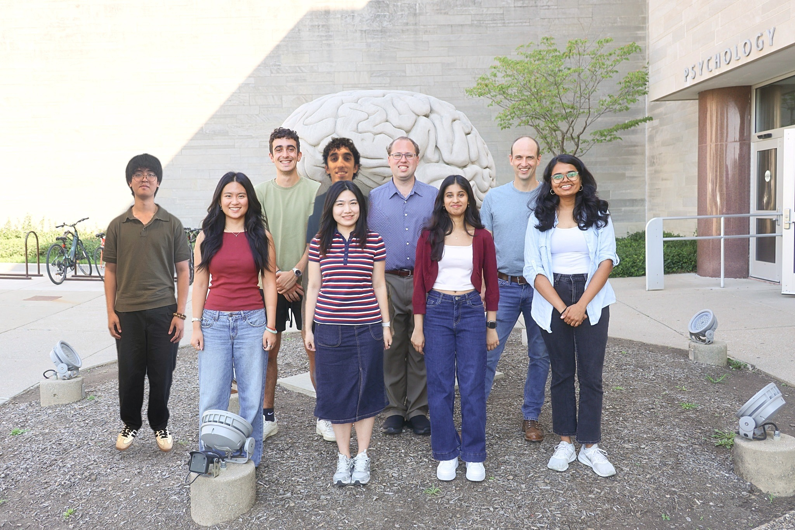
Thank you
Collaborators: Timothy J. Pleskac, Joseph Cesario, David J. Johnson, Glen Gagnon
The officers of the Milwaukee Police Department , and Chief Edward Flynn, Captain Nicole Davila, Lieutenant Richard Stein, Sergeants Paul Riehle and Jeffrey Sunn
Simulator and videos: Larry Lumb (Saturn Manufacturing), David McFarlane, Ahptic Film & Digital
Funding: NSF SBE 1230281 and 1756092
SCRIPT: Thank you. I want to thank my collaborators, Tim Pleskac, Joe Cesario, David Johnson and Glen Gagnon; the officers of the Milwaukee Police Department and its leadership; and the people who built the simulator and the videos. This work was funded by the National Science Foundation. I'm happy to take questions.
PHOTO: the current lab, including our newest members, [name] on the far left and [name] in the back row, centre. Welcome to the lab! (Composite: added to the group photo.)